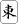

（１２）フォームとオカルトの境界
麻雀戦術論では、よくオカルトチックな戦術が語られることが多い。単純に云えば、いわゆる流れを予測するとか看破するというたぐいの話。
先般、このサイトのBBSでも、あるマージャンプロの解説が話題になった。それによると、「サイコロの出目が５，９のときは強いので配牌がいい。逆に８の時は最悪」とか、「暗刻になってテンパったときは両面よりシャボに受けた方がアガレる」と言うようなオカルトチックな解説をしているとか。実際そのプロに限らず、巷に横行する戦術論にはこういうオカルトチックなものが少なくない。
「暗刻になってテンパったときは両面よりシャボに受けた方がアガレる」という話であるが、正直言ってよく判らない。たとえば次のようなケースのことかしらん。

ここへを引いた場合、普通ならを切って

待ちに受ける。しかしが暗刻になって聴牌したのはタテの流れ、あるいは対子場であるから
を切ってシャボに受けた方がアガれるとか。
しかし上記のような一上聴形であれば、
また下のような一上聴形であれば、いくら
となれば「暗刻になってテンパったときは両面よりシャボに受ける」というのは、単に「シャボに受けられるときは、常にシャボに受ける」と言っているに等しい。そして常識的にはシャボより両面の方がアガリへの効率はいい。
そこでこのようなケースについては、ネット麻雀のデータかなんかで、「暗刻になってテンパったときは両面よりシャボに受けた方がアガレる」という統計結果でも出ない限り、いくら力説されてもにわかには信用できん。(^-^；
しかし何がどうであろうと、「こういう場合は、私はこうに打つ」と言う話であれば、それはそのプレーヤーのフォームということになる。となればハタがどうこう言うことではない。
しかしその一見効率の悪いフォームを、この世に存在もしないツモの流れなるものを理由にして、あたかも素晴らしい戦術であるかのごとく解説するのはどう考えてもオカルトだろう。
いま終盤にさしかかって次のような手だったとする
ドラ
単純に云って、さっさと
か

を引いて早く聴牌したいだけ。ところがたまたま前巡に引いて一晩泊めた
がくっついた。そこで何切る。
もちろん実戦では、
が純カラに近いとか、実は下家が索子の清一をガメっているとかさまざまな要因がある。しかしこれは手筋の考え方を問う話。そこで残り牌数はほぼ同じで、場況（ばきょう）もごく普通の状態ということにする。
でσ(-_-)の場合、こういうときはほとんど
もちろん
これに対して、「古いメンツを切る」というフォームがある。このフォームで行けば、か
、どちらかの順搭を切ることになる。これはこれで構わない。もしこのフォームに問題があるとすれば、「
また中には、「いや、自分はそういうことは決めてない。そのときの気分で、いま出来たメンツの
この場合も、打牌選択の段階で、（え〜と、どれにしようかなぁ）と迷って無駄な時間を費やしたり、
しかしこれを、たとえば「
といっても、「○○の流れに乗った」とか「○○は死にメンツ」だと考えて打牌を選択してゆくということ自体は、各プレーヤーのフォームの問題。「こういう場合、自分はこのように考えて、このように打つ」と説くのも、「自分のフォームはこうだ」という説明ということになる。
しかし存在もしない○○の流れや死にメンツなるものを、あたかもマージャンプロだけが認識できるものであるかのごとく説明して、それを理由に手筋を解説するのは完璧なオカルトの世界。
仮にその死にメンツなる
サイコロの「出目が５，９のときは〜、８のときは〜」という話にしても、「自分はそう思って対処している」という話であれば問題ない。しかしあたかも麻雀の流れを示す現象であるがごとく解説しているのだとしたら、これはもう....